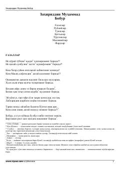

GRZahiriddin Muhammad Boburning sara gʻazallari va ruboiylari toʻplami.
Ushbu toʻplam buyuk sarkarda va shoir Zahiriddin Muhammad Boburning mumtoz gʻazallari, ruboiylari hamda tuyuqlarini oʻz ichiga oladi. Asarlarda ishqiy-lirik kechinmalar, tasavvufiy ramzlar va insoniy tuygʻular yuksak badihakamlikda tarannum etilgan. Kitob keng kitobxonlar ommasi hamda mumtoz adabiyot ixlosmandlari uchun moʻljallangan.